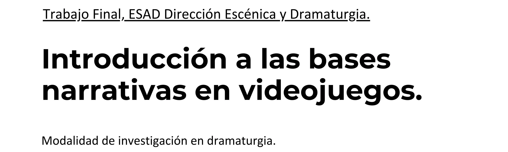

Final degree project / 2024 / Grade: 9.5 out of 10
Introduction to Video Game Narratives
Research into video game narrative structures, player agency, mechanics and the MDA Framework, connecting dramaturgy with interactive storytelling.
The project also involved Didascalia V.C., an educational VR initiative with Complutense University of Madrid, where I contributed to narrative structure and storytelling for learning.
Request the full thesis by email